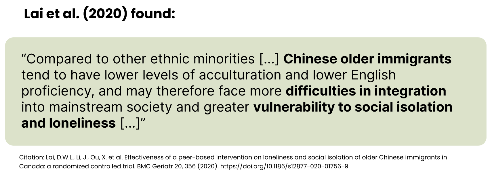
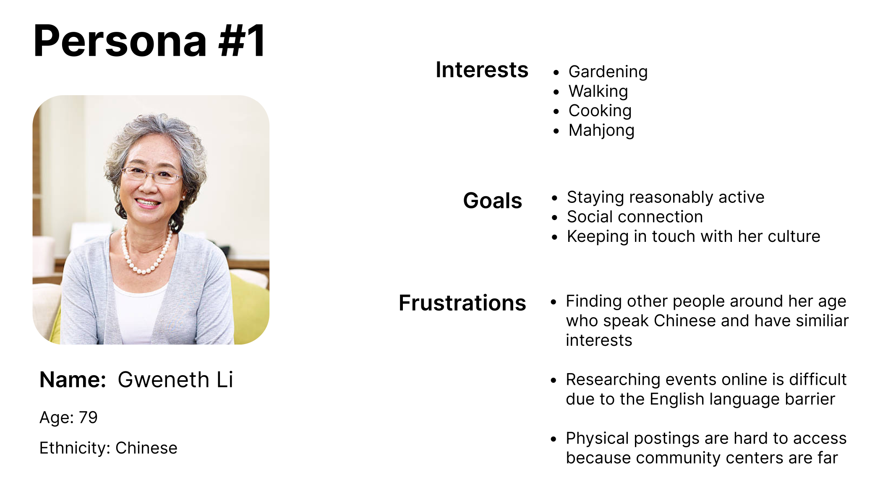
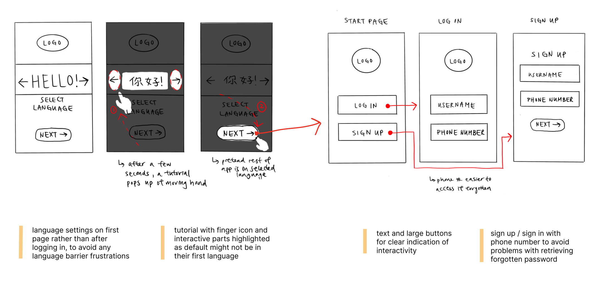
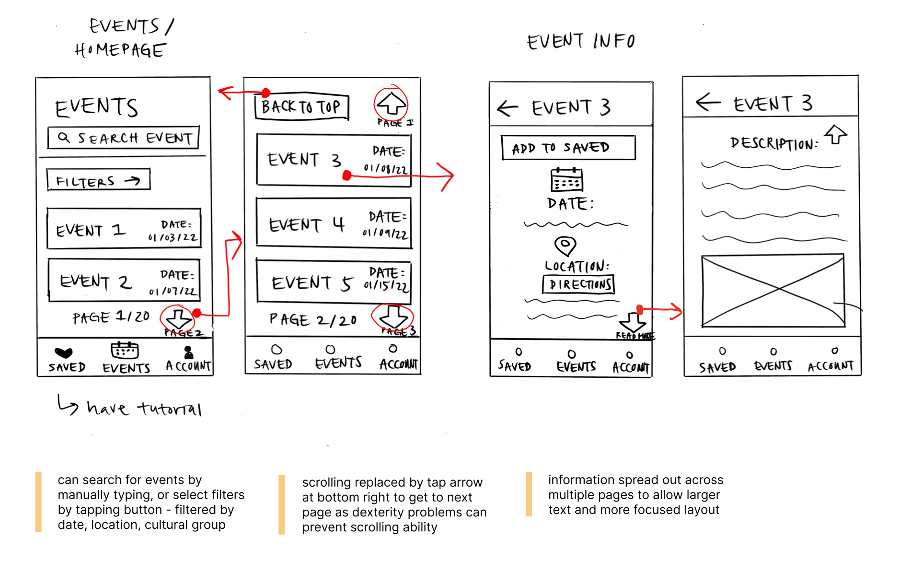
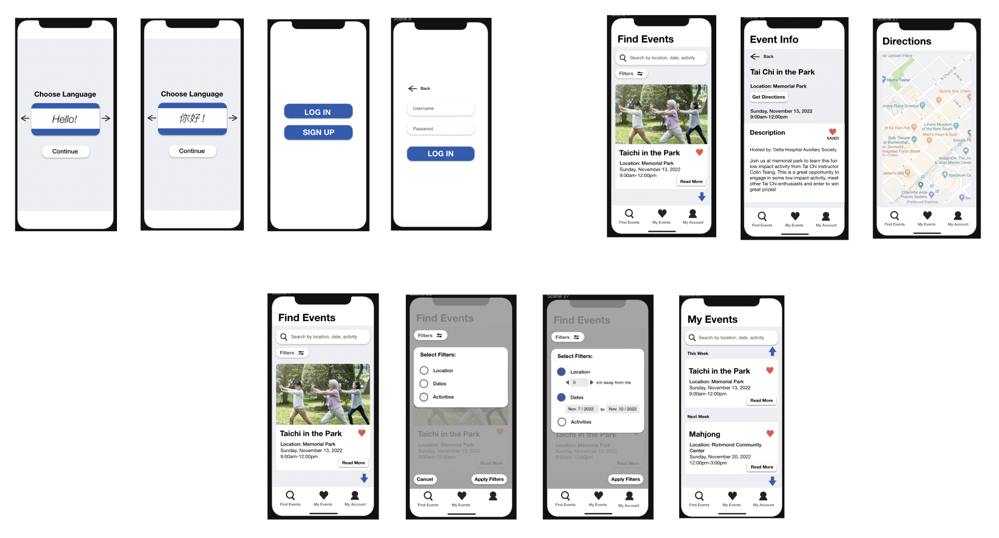
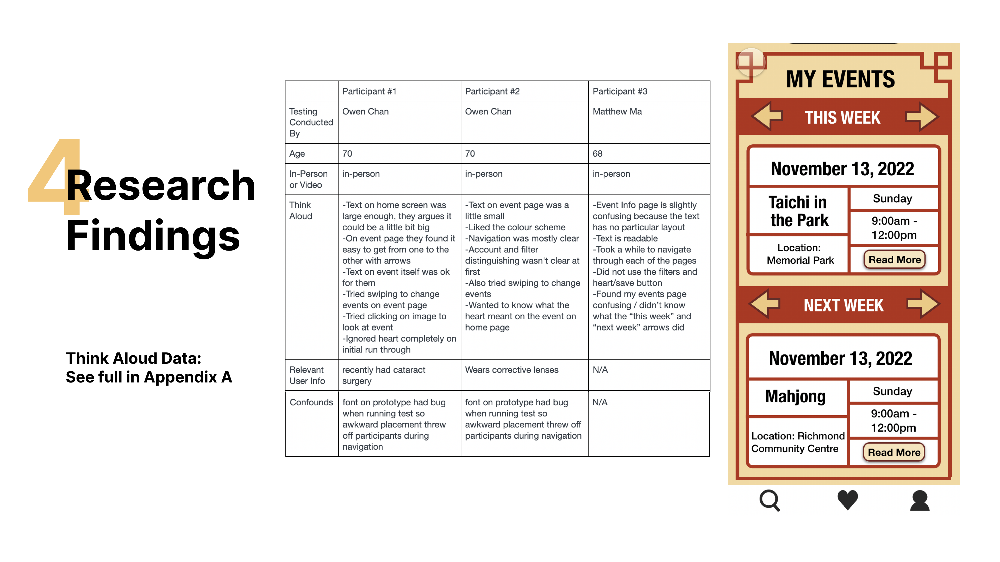

Event Finder App for Older Chinese Immigrants

Problem:
As important as community is in East Asian culture, many older Chinese immigrant adults struggle to form meaningful social interactions due to language barriers and cultural differences.
Solution:
Creating an mobile app that allows older Chinese immigrant adults to find activities in their community that help them socialize and also maintain their connection to their culture while away from home.
Project Constraints
Prompt: Redesign or design a new mobile application for a target user group aged 75 and older.
Time: 4 weeks
Tools used: Figma, Protopie
Team: Myself, Owen, and Matthew
My Role: UX/UI Design, Project Management
Identifying Domain + User Research
We conducted online research to determine what kind of pain points are prevelant for older users and mobile apps. From this, we realized that older adults were at higher risk for loneliness, and immigrant populations were at even higher risk.
User Personas
Our whole team identified as Chinese, so we spoke to our grandparents to develop a quick understanding of our user group. Ideally, I would have liked to conduct more thorough research but we faced time constraints at this stage of the project. Through our quick anecdotal research, we created a user persona to help clarify our target user group's goals.
Wireframing
Next, I sketched low-fidelity sketches for the app's layout.
 
Low-fidelity mockup of prototype
Next we made mid-fidelity wireframes. When iterating, I took into account the accessibility needs of the older adult group by enlarging fonts, designing with tap over swipe gestures, and high contrast colors, as these seemed to be common standards based on research.
Usability Testing Research
We conducted usability testing to validate whether our mockup pages were addressing older Chinese immigrants' needs. We showed our mockup pages to 6 participants and collected data using two methods: think aloud and user interviews.

Through this, we were able to identify 4 main areas of improvement needed to make our design more accessible for older adults.

High-fidelity mockup of prototype
Based on feedback suggesting that we make the user interface relate better to the target user group, we were inspired by common motifs in traditional Chinese culture in designing the app interface.
Prototype
Click to see the interactive prototype.We then created an interactive prototype using Prototpie to better demonstrate the user-experience of the app.
Challenges / Lessons Learned
One of the main challenges of this project was that our scope was initially too large as we had chosen to design for mutliple older immigrant adult communities. However, upon receiving feedback we narrowed our target user group to older Chinese immigrant adults so that the language feature in the app would be easier to implement and we could have a more specific idea of how to design the interface for this group.
Looking back on the project, this might not have been the most viable design solution as I now realize designing the interface in another language has a huge impact on the subsequent UX/UI decisions. Since Chinese characters are symbolic and not linear like English characters, this would change the text spacing a lot. Furthermore, we would have to take into consideration appropriate translation to convey the same meaning in another language. Therefore, this was a good opportunity to learn and make mistakes, and next time I would do more extensive research before pursuing a design direciton.